Meet The Signs
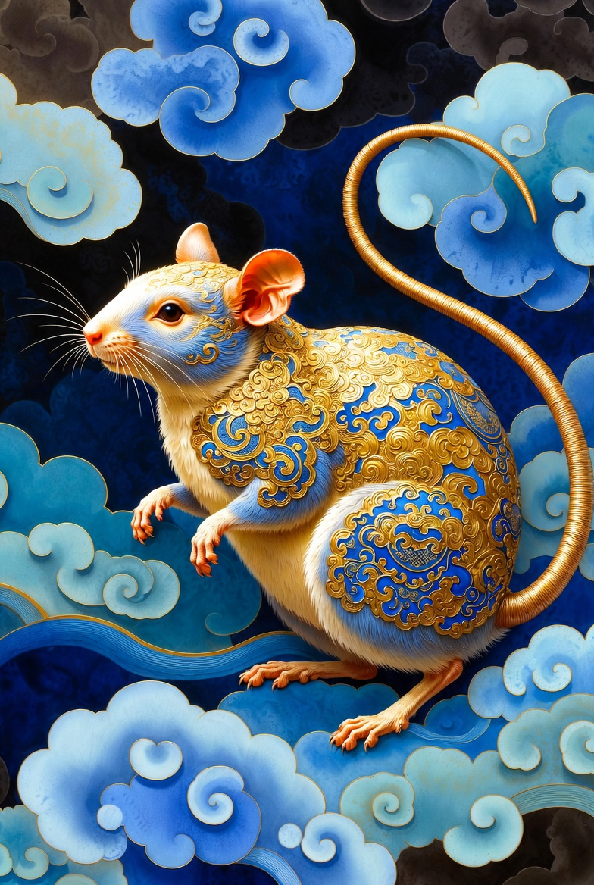
The Rat
Ambitious, clever and devoted to their family. Hard-working and imaginative. Not always sure of themselves and do not always plan for the future. Will always stand by their friends.
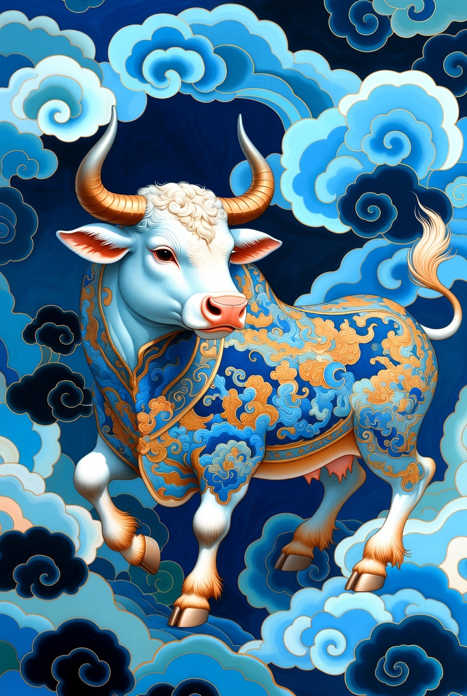
The Ox
Born leaders who will work hard to achieve their aims. Dependable, good organisers and not easily influenced by others. Patient, loyal to their friends and expect loyalty in return. Tend to have lasting relationships.
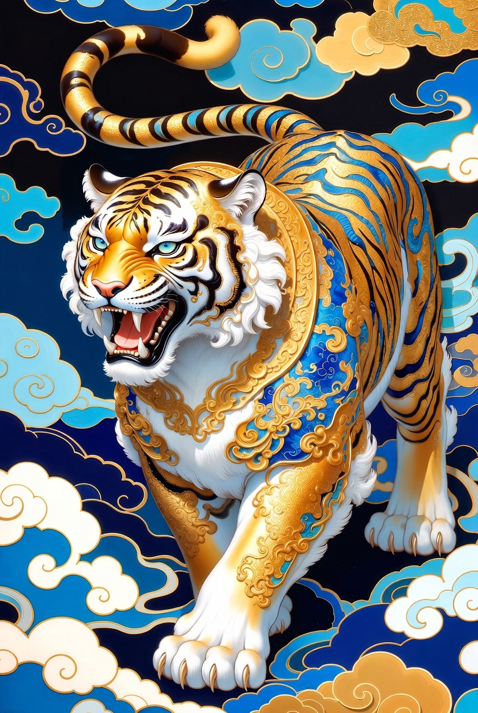
The Tiger
Sensitive, emotional and adventurous. Confident, risk takers and dislike taking orders. Good at seeing problems, but less able to see the solutions. Often seek a shoulder to cry on when feeling down. Warm and generous to the people they love.
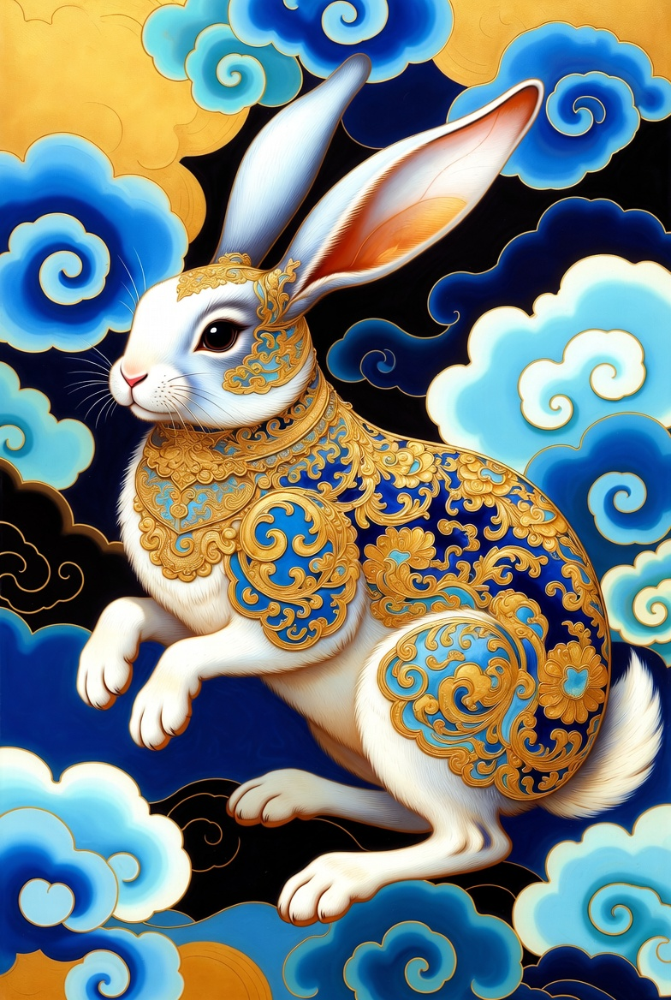
The Rabbit
Affectionate, gentle with strong family ties. Caring and hates conflict. Peace-makers with lots of friends. Dislike being the centre of attention and enjoy the good things of life.
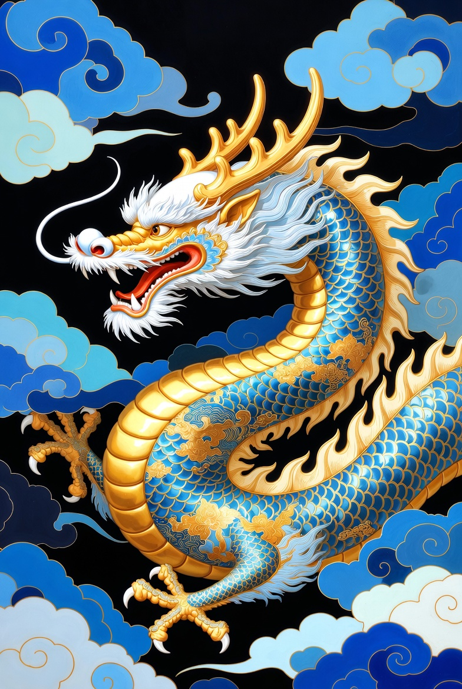
The Dragon
Confident, hardworking and always strive to be at the top. Full of energy, determined and will inspire other people. Don't like routine and are excited by new projects. Show loyalty to friends, popular and fun-loving. The Dragon is the only mythical creature in the Chinese zodiac and is looked upon as the luckiest of all the animals.
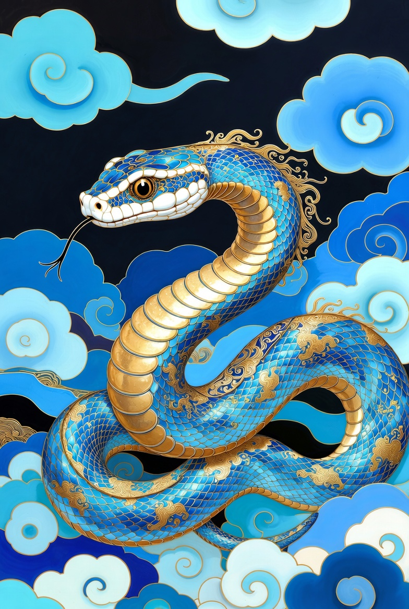
The Snake
Charming and good thinkers. Love the finer things in life, so only the best is good enough. Good at making and saving money. Patient, charming and wise. Prefer not to rely on other people.
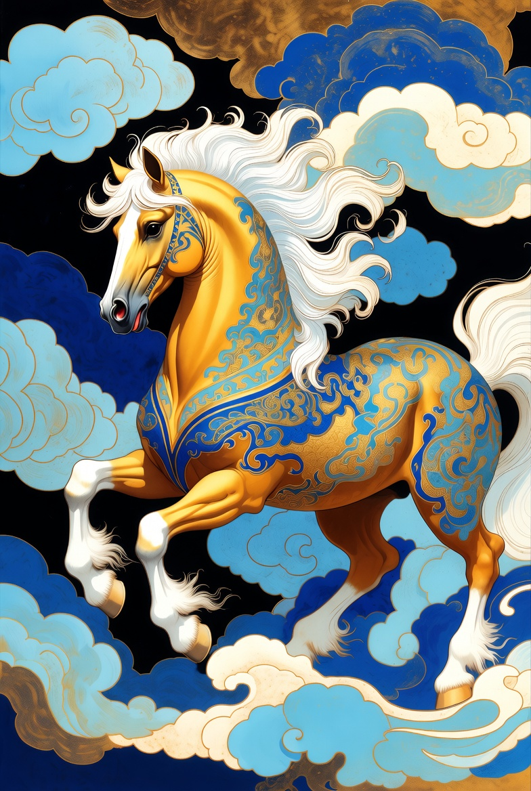
The Horse
Very hardworking and independent. Will work on and on until a job is finished. Very intelligent, ambitious and expect to succeed. Can cope with several projects at once. Easily fall in love.
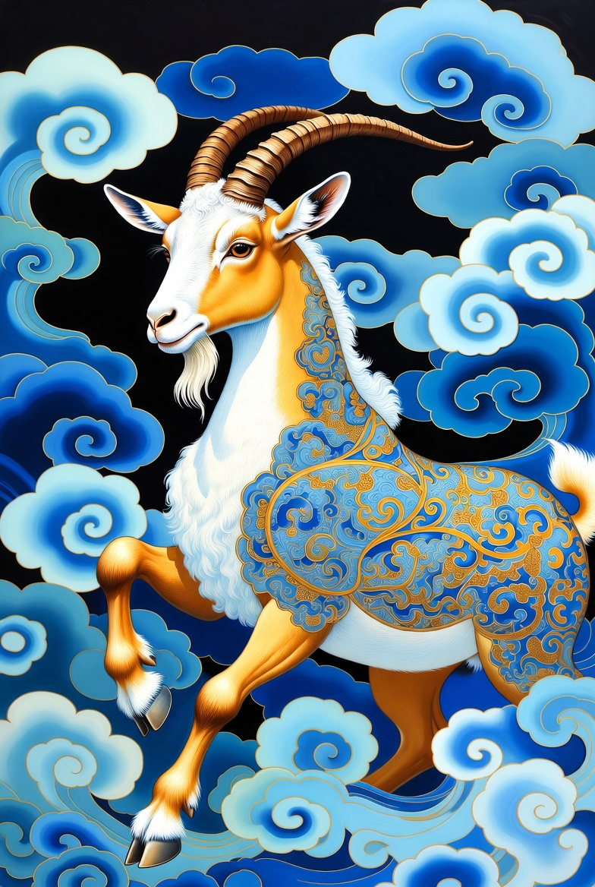
The Goat
Elegant, artistic and good-natured. Inclined to worry too much. Peace-lovers who prefer to avoid disagreements. Others may put upon them, but they are stronger than they seem. Family is very important.
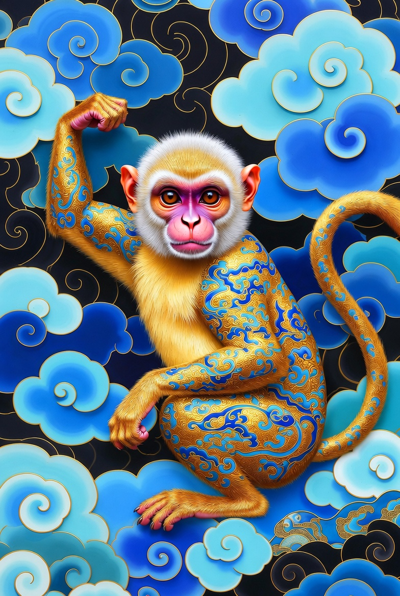
The Monkey
Very clever, but mischievous. Love a challenge and can wriggle out of difficult situations by thinking through difficult problems. Highly successful and well-liked.
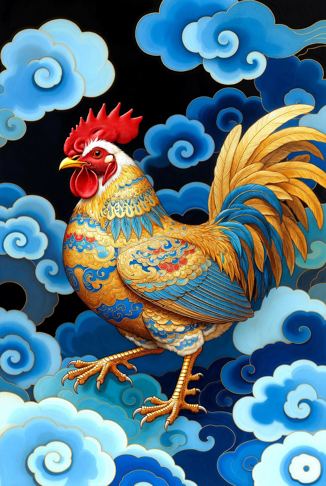
The Rooster
Hardworking, strong-willed and confident. Well organised and good time keepers. Enjoy being the centre of attention and love flattery. Often outspoken and hate criticism of themselves though they can be inclined to find fault with other people.
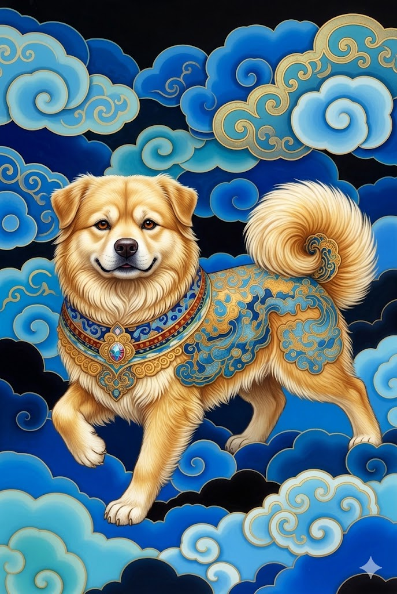
The Dog
Faithful, honest and ready to serve others. Believe in truth and justice and loyal to friends. Always willing to listen to people's problems and is able to gain the respect of others. Will share their thoughts but do not easily forgive those who cross them. Trustworthy. Tend to worry too much.
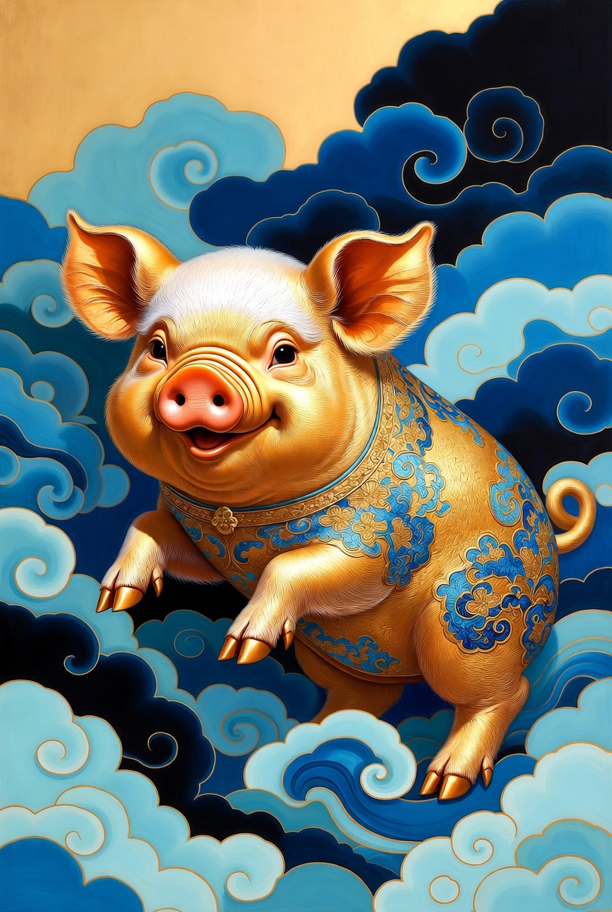
The Pig
Honest, peace-loving and make good friends. Will try not to argue and rarely lose their temper. Love the good things in life and are very willing to share with others. Enjoy gossip and fall in love easily. Can be untidy people at home.